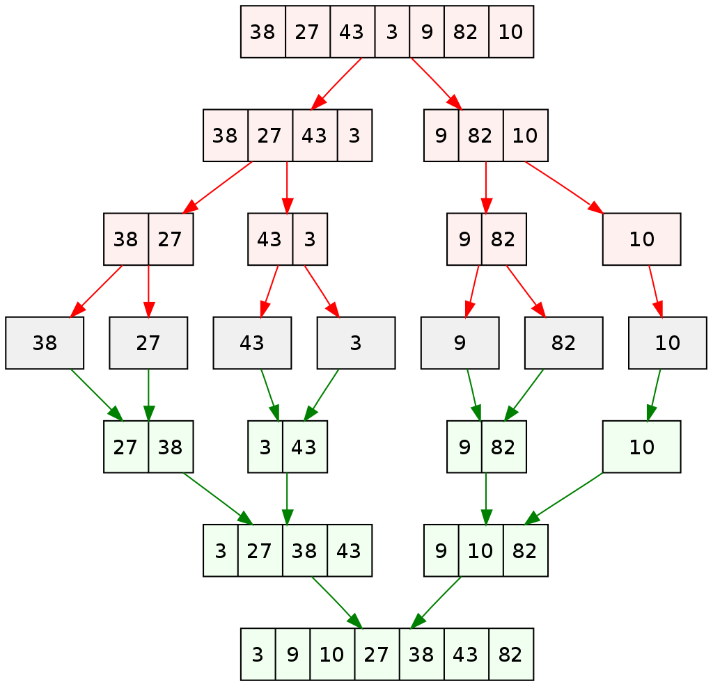

8. Recursion#
A very powerful concept in programming is recursion, or functions which call themselves. A simple example is the factorial function, which can be defined as:
Note that:
There is a base case, \(n=0\), which defines the output directly
For higher \(n\), the output is defined in terms of lower values
This can be implemented in a Julia function using an if-statement and a call to the function itself:
function recursive_factorial(n)
if n == 0
return 1
else
return n*recursive_factorial(n-1)
end
end
recursive_factorial (generic function with 1 method)
recursive_factorial(7)
5040
Note the way this will be evaluated in Julia: Eventually it will call the function with \(n=0\) which will return 1, this will be multiplied by 2, etc, and last it will multiply by 7. This can be demonstrated by printing additional information:
function recursive_factorial_info(n)
if n == 0
println("n == 0, returning 1")
return 1
else
println("n == ", n, ", calling itself with parameter ", n-1)
output = n*recursive_factorial_info(n-1)
println("n == ", n, ", finished calling itself, multiplying and returning ", n, "! = ", output)
return output
end
end
recursive_factorial_info (generic function with 1 method)
recursive_factorial_info(7)
n == 7, calling itself with parameter 6
n == 6, calling itself with parameter 5
n == 5, calling itself with parameter 4
n == 4, calling itself with parameter 3
n == 3, calling itself with parameter 2
n == 2, calling itself with parameter 1
n == 1, calling itself with parameter 0
n == 0, returning 1
n == 1, finished calling itself, multiplying and returning 1! = 1
n == 2, finished calling itself, multiplying and returning 2! = 2
n == 3, finished calling itself, multiplying and returning 3! = 6
n == 4, finished calling itself, multiplying and returning 4! = 24
n == 5, finished calling itself, multiplying and returning 5! = 120
n == 6, finished calling itself, multiplying and returning 6! = 720
n == 7, finished calling itself, multiplying and returning 7! = 5040
5040
This example is highly hypothetical - the factorial function is easier and more efficient to implement using for-loops. But for more complex problems, recursion can be an essential tool.
8.1. Example: The Ackermann function#
Think Julia, Exercise 6-5: The Ackermann function, \(A(m, n)\), is defined:
See https://en.wikipedia.org/wiki/Ackermann_function. Write a function named ack that evaluates the Ackermann function. Use your function to evaluate ack(3, 4), which should be 125. What happens for larger values of m and n?
This example is not an obvious for-loop like the factorial function, but very easy to implement using recursion:
function ack(m,n)
if m == 0
return n + 1
elseif m > 0 && n == 0
return ack(m-1,1)
else
return ack(m-1, ack(m,n-1))
end
end
ack (generic function with 1 method)
ack(3,4)
125
Again, let’s print some additional information to try to understand how the recursive function calls itself:
function ack_info(m,n)
function printme()
print("ack(", m, ",", n, "): ")
end
if m == 0
output = n + 1
printme()
println("Case 1: returning n + 1 = ", output)
return output
elseif m > 0 && n == 0
printme()
println("Case 2: calling itself with parameters m-1,1 == ", m-1, ",", 1)
output = ack_info(m-1,1)
printme()
println("Case 2: finished calling itself, returning with output ", output)
return output
else
printme()
println("Case 3: calling itself for new n-value with parameters m,n-1 == ", m, ",", n-1)
newn = ack_info(m,n-1)
printme()
println("Case 3: finished calling itself for new n-value == ", newn)
printme()
println("Case 3: calling itself with parameters m-1, A(m,n-1) == ", m-1, ",", newn)
output = ack_info(m-1,newn)
printme()
println("Case 3: finished calling itself, returning ", output)
return output
end
end
ack_info (generic function with 1 method)
ack_info(2,1)
ack(2,1): Case 3: calling itself for new n-value with parameters m,n-1 == 2,0
ack(2,0): Case 2: calling itself with parameters m-1,1 == 1,1
ack(1,1): Case 3: calling itself for new n-value with parameters m,n-1 == 1,0
ack(1,0): Case 2: calling itself with parameters m-1,1 == 0,1
ack(0,1): Case 1: returning n + 1 = 2
ack(1,0): Case 2: finished calling itself, returning with output 2
ack(1,1): Case 3: finished calling itself for new n-value == 2
ack(1,1): Case 3: calling itself with parameters m-1, A(m,n-1) == 0,2
ack(0,2): Case 1: returning n + 1 = 3
ack(1,1): Case 3: finished calling itself, returning 3
ack(2,0): Case 2: finished calling itself, returning with output 3
ack(2,1): Case 3: finished calling itself for new n-value == 3
ack(2,1): Case 3: calling itself with parameters m-1, A(m,n-1) == 1,3
ack(1,3): Case 3: calling itself for new n-value with parameters m,n-1 == 1,2
ack(1,2): Case 3: calling itself for new n-value with parameters m,n-1 == 1,1
ack(1,1): Case 3: calling itself for new n-value with parameters m,n-1 == 1,0
ack(1,0): Case 2: calling itself with parameters m-1,1 == 0,1
ack(0,1): Case 1: returning n + 1 = 2
ack(1,0): Case 2: finished calling itself, returning with output 2
ack(1,1): Case 3: finished calling itself for new n-value == 2
ack(1,1): Case 3: calling itself with parameters m-1, A(m,n-1) == 0,2
ack(0,2): Case 1: returning n + 1 = 3
ack(1,1): Case 3: finished calling itself, returning 3
ack(1,2): Case 3: finished calling itself for new n-value == 3
ack(1,2): Case 3: calling itself with parameters m-1, A(m,n-1) == 0,3
ack(0,3): Case 1: returning n + 1 = 4
ack(1,2): Case 3: finished calling itself, returning 4
ack(1,3): Case 3: finished calling itself for new n-value == 4
ack(1,3): Case 3: calling itself with parameters m-1, A(m,n-1) == 0,4
ack(0,4): Case 1: returning n + 1 = 5
ack(1,3): Case 3: finished calling itself, returning 5
ack(2,1): Case 3: finished calling itself, returning 5
5
This also shows that the function calls itself for the same parameter values many times, suggesting that this could be done more efficiently by storing values that have already been computed.
8.2. Example: The Greatest Common Divisor (GCD)#
Think Julia, Exercise 6-8: The greatest common divisor (GCD) of \(a\) and \(b\) is the largest number that divides both of them with no remainder.
One way to find the GCD of two numbers is based on the observation that if \(r\) is the remainder when \(a\) is divided by \(b\), then gcd(a, b) = gcd(b, r). As a base case, we can use gcd(a, 0) = a.
function my_gcd(a,b)
if a == 0
return b
elseif b == 0
return a
else
return my_gcd(b, a % b)
end
end
my_gcd (generic function with 1 method)
factor = 123_456_789
prime1 = 67_867_979
prime2 = 86_028_121
my_gcd(prime1*factor, prime2*factor)
123456789
8.3. Example: Recursive triangles#
Consider the shape obtained by the following algorithm:
if the triangle is big enough
Connect the midpoints.
Color the interior triangle mauve.
Draw smaller versions of the same shape in each of the 3 remaining interior triangles
else
Color the whole triangle yellow.
end
We implement it as follows. “Big enough” is determined by keeping track of the level (depth) of recursion.
using PyPlot
function drawTriangle(x, y, level)
# Draw recursively colored triangles.
# x,y are 3-vectors that define the vertices of a triangle.
if level == 0
# Recursion limit (depth) reached
fill(x, y, "y") # Color whole triangle yellow
else
# Draw the triangle...
plot(x[[1,2,3,1]], y[[1,2,3,1]], "k", linewidth=0.5)
# Determine the midpoints...
a = (x + x[[2,3,1]]) / 2
b = (y + y[[2,3,1]]) / 2
# Draw and color the interior triangle mauve
fill(a, b, "m")
# Apply the process to the three "corner" triangles...
newx = [x a a[[3,1,2]]]
newy = [y b b[[3,1,2]]]
for i = 1:3
drawTriangle(newx[i,:], newy[i,:], level - 1)
end
end
end
drawTriangle (generic function with 1 method)
# Equilateral triangle
x = [0, 1, 0.5]
y = [0, 0, 1/sqrt(2)]
drawTriangle(x, y, 5)
8.4. Merge sort#
Merge sort is a so-called Divide and Conquer algorithm. It divides an input array into two halves, calls itself for these two halves and then merges the two sorted halves. The method is illustrated below, for a simple test case with 7 elements:  (from https://en.wikipedia.org/wiki/Merge_sort)
In our implementation, the mergeLR!(L, R, x) function is used for merging two halves. It assumes that the arrays L and R are sorted, and merges them into one:
function mergeLR!(L, R, x)
# Merge the *already sorted arrays* L and R into a sorted array x
i = j = k = 1
# Merge L and R into x
while i <= length(L) && j <= length(R)
if L[i] < R[j]
x[k] = L[i]
i += 1
else
x[k] = R[j]
j += 1
end
k += 1
end
# Copy remaining elements
while i <= length(L)
x[k] = L[i]
i += 1
k += 1
end
while j <= length(R)
x[k] = R[j]
j += 1
k += 1
end
end
mergeLR! (generic function with 1 method)
This can now be used to recursively split the array into two approximately equal-sized arrays until they have length 1, and then apply the mergeLR! function at each level:
function mergesort!(x)
# Sort the elements of the array x using the Mergesort algorithm
if length(x) <= 1
return x
else
mid = length(x) ÷ 2 # Find the midpoint of the array
L = x[1:mid] # Divide array into 2 halves
R = x[mid+1:end]
mergesort!(L) # Sort first half
mergesort!(R) # Sort second half
mergeLR!(L, R, x)
end
end
mergesort! (generic function with 1 method)
# Example: Sort random integers
x = rand(1:1000, 10)
println(x)
mergesort!(x)
println(x)
[146, 427, 955, 762, 329, 106, 86, 683, 968, 862]
[86, 106, 146, 329, 427, 683, 762, 862, 955, 968]
It can be shown that the number of operations needed for this algorithm to sort an array of length \(n\) is about a constant times \(n \log_2 n\) (which is optimal for methods based on general comparisons). We can roughly verify this using the @time macro which measures execution time:
for array_size = Int64[1e3, 1e4, 1e5, 1e6, 1e7]
x = rand(array_size) # Random floating point numbers
println("n = ", array_size)
@time mergesort!(x)
end
n = 1000
0.047354 seconds (24.08 k allocations: 1.628 MiB, 99.70% compilation time)
n = 10000
0.001318 seconds (20.00 k allocations: 2.145 MiB)
n = 100000
0.036682 seconds (200.08 k allocations: 23.977 MiB, 28.63% gc time, 13.57% compilation time)
n = 1000000
0.199707 seconds (2.00 M allocations: 266.053 MiB, 12.26% gc time)
n = 10000000
2.144884 seconds (20.01 M allocations: 2.834 GiB, 5.95% gc time)
We can see that at least for the larger values, the execution time is a little more than 10 times larger when \(n\) gets 10 times larger, showing slightly more than a linear dependency on \(n\).
8.5. Saving intermediate values in a recursion#
The function below implements the so-called McCarthy 91 function:
While trivial to implement using recursion, it is not that easy to trace the recursive calls to the function. Therefore, we define a function Mvalues(n) which creates an empty array returned_values. Inside this function we define the actual recursive function M(n), and each time it is called we push the value that it returns to the returned_values array. Note that the order of these numbers in the array will not be the same as the order in which M(n) is called, since the values are pushed to the array at the end of the function.
function Mvalues(n)
returned_values = Int64[]
function M(n)
if n > 100
newval = n - 10
else
newval = M(M(n + 11))
end
push!(returned_values, newval)
return newval
end
M(n)
return returned_values
end
Mvalues (generic function with 1 method)
Mvalues(105) # Easy - terminates immediately, M(105) = 95
1-element Vector{Int64}:
95
Mvalues(97) # More complex - finally returns M(97) = 91
9-element Vector{Int64}:
98
99
100
101
91
91
91
91
91